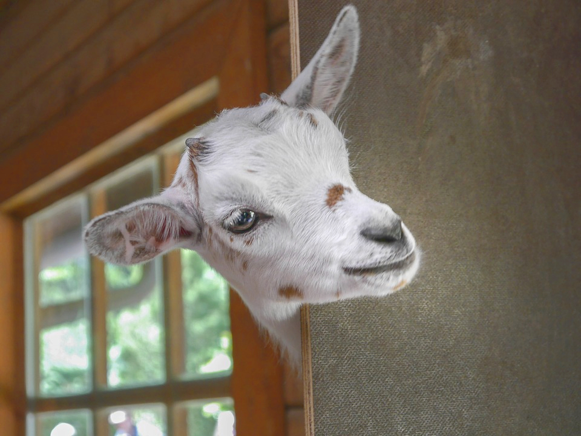

Kiej downo tymu żył se jeglōrz co mioł trzech synów
W chałupie było biydnie i nojwiykszym dostatkiym była ciga co dowała smaczne mlyko. Jednego dnia koza wyszkubała już cołko trowa pod chałpōm beztuż nojstarszy syn wysmyczył jom na łąka coby sie tam pasła. Pod wieczór synek sie spytoł zwierzęcia czy już je pojedzone, na co ciga padała:
Ja, najadłach sie fest, już wiyncy nie umia, pódź du dōm.
No to synek zakludziył jom do chałupy i padoł fatrowi że koza sie zocnie wypasła i nażrała sie wiela wlezie. Krawiec poszoł obejrzeć czy z koziczkōm je wszysko dobrze a wtedy to przewrotne stworzyni zabeczało:
Głodno żech je, nic ech dzisio trowy nie poszkubała bo nic nie szło znejś po krzipopach i beszōngach!
No to ojciec sie znerwowoł, synek dostoł lyjty i w nerwach fater wygnoł go z chałupy. Na drugi dziyń z cigōm poszoł drugi syn i historyjo była uzaś ta sama – koza sie nażrała a potym nacyganiyła jeglorzowi że je głodno bo trowy nikaj nie było. To chop zaś w nerwach wygnoł swoigo drugigo syna. A na trzeci dziyń ganc to samo sie stało, nejmłodszy syn tyż dostoł łomot i ojciec go wyciep z dōma.
Zatym nojstarszy syn poszeł na nauka do stolorza a że był pilnym szkolorzym, roz dwa zbył praktyka
Stary stolorz fest se upodoboł uczynnego synka i doł mu w gyszynku magiczny stolik kiery na hasło „Stoliczku, nakryj sie!”, cołki zastawioł sie najzocniejszym jodłym i dobrym winym. Synek wymedytyrowoł że trza by iś nazot ku chałupie, monej fater by sie już nie ciepoł o gupio koza.
Po drodze karlus poloz do karczmy bo sie już ściymniało i strach było samymu sie szwyndać po nocach. Tam pokozoł gościōm co umi jego magiczny stolik – cołko karczma fajrowała, wszyjscy jedli i pili w wielki wesołości. A szynkōrz sie zeźlył i fest zowiściył synkowi cudownego stoliczka. W nocy karczmōrz zakrod sie do izby młodego, zahabiył magiczny stolik i podłożył ajnfachowy, uciosany ganc tak samo.
 Rano synek zebroł sie i poszeł a jak yntlich doszeł do chałupy, fater sie fest uradowoł. Ale ku rozpaczy młodego, stolik był darymnym futrym i trza było uzaś ciś do roboty u stolorza.
Rano synek zebroł sie i poszeł a jak yntlich doszeł do chałupy, fater sie fest uradowoł. Ale ku rozpaczy młodego, stolik był darymnym futrym i trza było uzaś ciś do roboty u stolorza.
Drugi syn poszoł do młynorza kaj robiył ciynżko i procnie
Na fajrant wyuczynio młynorz kiery byl fest rod ze synka, doł mu w gyszynku yjzla, kierymu z pyska leciały złote monety jak sie zawołało „Lygej yjzlu!”. No to młody wysztudyrowoł, że dobrze by było wrócić du dōm, fater na zicher by sie ucieszył z zocnego zwiyrza. Młody mioł kupa drogi beztuż na noc poloz do karczmy coby sie kimnyć. Przikozoł szynkōrzowi fest dać pozór na yjzla i zocnie sie nim zajmować.
Rano synkowi brakło dwóch klepoków coby zabulić za gościna beztuż polecioł do swoigo osła. A młody nie wiedzioł że cichtuje za nim wrazidlaty karczmōrz co był fest zowistny o piyknego yjzla. Kiej młody poszeł na śniodani, szynkōrz wartko podmiyniył osła. Jak drugi syn doszeł du dōm, to sie okozało że kieryś mu zahabiył magicznego yjzla i było moc ślimtanio bo zaś trza było iś nazot do roboty do młynōrza.
 Wszyski te wieści doszły do nejmłodszego syna, kiery praje kończył nauka u tokarza
Wszyski te wieści doszły do nejmłodszego syna, kiery praje kończył nauka u tokarza
Ôn tyż był pilnym, talyntnym szkolorzym beztuż majster doł mu w podzięce magiczny kijok kiery na hasło „Bij, kiju-samobiju!” sprawioł srogi lyjty aż sie zawołało „Dość już, kiju-samobiju!”. Synek poszoł do zowistnego szynkorza, poprosiył o gościna i przi okazji zacznył mu kludzić o swoim magicznym kiju kiery przeonaczo w diamenty wszysko czego sie yny tyknie. Zapadła noc i chwanciorz podkrod sie do młodego bo se był pewny że synek kimie. Ale ôn yny na to czekoł! Migiym zaryczoł „Bij, kiju-samobiju!” i napuściył kijok na złego szynkorza. Młody zażądoł nazot magicznego stolika i yjzla na co ledwa żywy chop od razu przistoł.
Nejmłodszy syn wróciył do ojca i swoich braci i w wielki uciesze pokozoł swoi zdobycze. W chałupie nastała radość i dostatek i odtąd wszyjscy żyli do kupy w zgodzie i szczynśliwości. A staro koza jednego dnia urwała sie z kety i poleciała we świat ale żodyn nie wiy kaj ani po co.


{kind=link}
{kind=link}
{kind=link}
{kind=link}
{kind=link}
{kind=link}